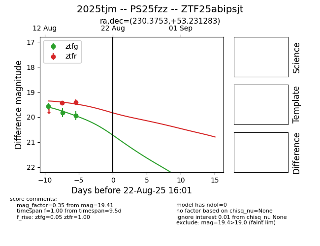

Target 2025tjm at 2025-08-22 16:01, see:
FINK: fink-portal.org/ZTF25abipsjt
Lasair: lasair-ztf.lsst.ac.uk/objects/ZTF25abipsjt
ALeRCE: alerce.online/object/ZTF25abipsjt
TNS: wis-tns.org/object/2025tjm
YSE: ziggy.ucolick.org/yse/transient_detail/2025tjm
alt names
ZTF25abipsjt (ztf,alerce)
2025tjm (tns,yse)
PS25fzz (panstarrs)
coordinates:
equatorial (ra, dec) = (230.3753,+53.23128)
galactic (l, b) = (86.6425,+51.98291)
photometry
last ztfg=19.94, ztfr=19.41
3 ztfg, 2 ztfr detections
